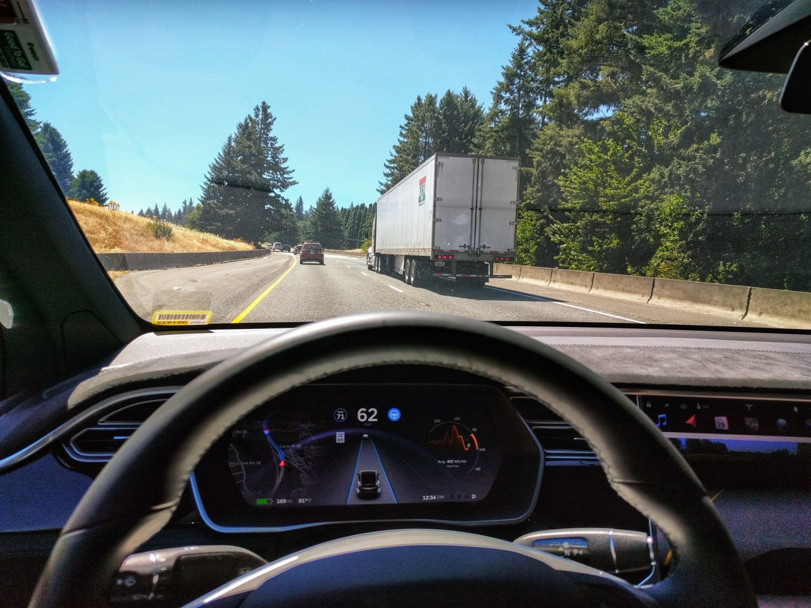

מה מסוגל לעשות Tesla FSD גרסה 13?
FSD (Full Self-Driving) של טסלה בגרסה 13 הוא המערכת המתקדמת ביותר לנהיגה אוטונומית שזמינה לרכישה לצרכן פרטי. המערכת מבוססת לחלוטין על מצלמות בלבד — 8 מצלמות סביב הרכב — ומודל AI עצבי שמעבד את התמונות בזמן אמת. אין ליידר, אין רדאר. גרסה 13 מציגה שיפור משמעותי בצמתים, בניהול חיתוכי נתיבות, ובנסיעה בסביבות עירוניות צפופות.
המערכת מסוגלת לנהל: יציאה מחניה, נסיעה בכביש מהיר, כניסה ויציאה מכניסות, פניות בצמתים עם רמזורים, עצירה בשלטי עצור, ועקיפת חסימות. הנהג חייב להישאר ערני ולהחזיק ידיים מוכנות — FSD הוא Level 2+ ולא Level 4 (נהיגה עצמאית מלאה).

הבדיקה הישראלית: תל אביב ואיילון
בדקנו FSD 13 על Model Y בישראל בשלושה תרחישים: כביש מהיר (איילון צפון ודרום), רחובות עירוניים בתל אביב (דיזנגוף, ארלוזורוב, כיכר המדינה), וצמתים מסובכים.
- כביש מהיר: FSD מצוין. מחליף נתיבות בצורה חלקה, שומר מרחק, מגיב לכלי רכב שמשלשלים. זה המקום שבו FSD באמת מרשים ומפחית עייפות בנסיעות ארוכות.
- רחובות עירוניים: סביר. מתמודד עם רמזורים ושלטי עצור, אבל לעיתים מגיב לאט לאופנוענים ואופניים שחותכים — תופעה שכיחה בתל אביב.
- כיכרות וצמתים מסובכים: מאתגר. כיכרות בסגנון הישראלי עם נהגים תוקפניים גרמו ל-FSD להיתקע מספר פעמים ולדרוש התערבות ידנית.
עלות FSD בישראל וסטטיסטיקות בטיחות
FSD זמין בשתי אפשרויות: מינוי חודשי ב-$99 לחודש, או רכישה חד-פעמית ב-$12,000 (כ-44,000 ש"ח). הרכישה החד-פעמית מועברת לרכב — לא לנהג — ולכן שווה אם מתכננים להחזיק את הרכב לאורך זמן. טסלה מפרסמת: 1 תאונה לכל 5.7 מיליון מיילים עם Autopilot, לעומת 1 לכל 1.5 מיליון מיילים ללא. המספרים מרשימים, אבל רוב הנהיגה עם Autopilot היא בכביש מהיר — הסביבה הכי בטוחה ממילא.
Tesla FSD מול Waymo — מה ההבדל?
Waymo (של גוגל) פועל בסן פרנסיסקו ופניקס כמונית רובוטית ללא נהג בכלל — Level 4. FSD של טסלה עדיין דורש נהג ערני. Waymo משתמש בליידר ורדאר בנוסף למצלמות ויש לו מפה תלת-ממדית מדויקת של כל אזור שהוא פועל בו. טסלה טוענת שהגישה שלה (מצלמות בלבד + AI) ניתנת להרחבה לכל העולם — ו-Waymo לא. בישראל, Waymo לא פועל ולא צפוי לפעול בשנים הקרובות.
מצב הרגולציה בישראל ומסקנה
מגבלות הרגולציה הישראלית אוסרות על נהיגה ללא מגע בהגה. FSD מאושר לשימוש רק בתנאי שהנהג ערני ומוכן להתערב. אם אתם נוסעים הרבה בכביש מהיר — FSD משתלם. הנהיגה הופכת לנוחה יותר, הסטרס יורד. אם רוב הנסיעות שלכם בעיר — FSD פחות מוסיף, ולעיתים מתסכל. המינוי ב-$99 הוא הדרך הנבונה להתחיל: בדקו חודש-חודשיים ואז החליטו על רכישה.